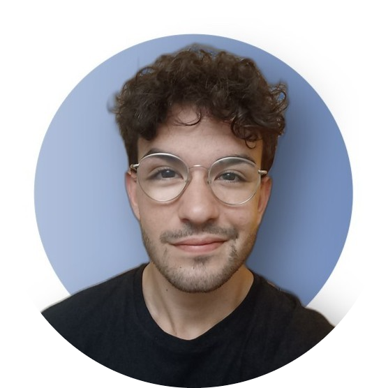

Giuseppe Steduto - Resume
Education
Politecnico Di Milano
B.S. Computer Engineering | GPA: 29.6/30 | Milan, Italy | Sep 2020 - July 2023
- Main coursework: Database management, Networking, Operating systems, Algorithms and Data Structures
- Major: Computer Engineering
- Member of Google Developer Student Club, MESA and BEST student associations
Illinois Institute of Technology
Student exchange | Chicago, USA | Aug 2022 - Dec 2022
- Member of Association for Computer Machinery and CyberHawks
IISS L. Di Maggio
High school diploma | GPA: 9.9/10 | Final grade: 100/100 with honors San Giovanni Rotondo, Italy | Sep 2015 - Jun 2020
- Member of Association for Computer Machinery and CyberHawks
Work Experience
Full-stack Web Developer
Grupem | Remote | Dec 2020 - present
- Designed and created a web application consisting of a user dashboard and a complex relational database leveraging Laravel,
PHP, MySQL for the backend and ReactJS for the frontend, improving the user satisfaction by 300%.
- Deployed the application on the cloud using AWS and made it easily scalable, while coordinating with an international team
that was responsible for developing a mobile application.
Student Researcher
Illinois Institute of Technology | Chicago, USA | Sep 2022 - present
- Member of Association for Computer Machinery and CyberHawks
IT Team Leader
Milan Engineering Student Association Milan, Italy | Dec 2021 - Jul 2022
- Trained and directed an international team composed of 11 persons in building a website with Wordpress and custom PHP
plugins to showcase the work of the association, enhancing our online presence.
Selected Projects
Automated Lung Cancer Identification in PET/CT Imaging with Halide
NECSTCamp - Politecnico di Milano Oct 2021 - Jan 2022
- Rewrote and developed part of a computer vision tool aiming at detecting lung cancer in PET/CT scans employing the Halide
language as a C++ library, improving the overall performance by 45%.
Techseum - Technological Museum
IISS L. Di Maggio Sep 2020 - May 2021
- Led a team that created a full-stack web app used by 500+ tourists to interactively visit a museum with HTML5, PHP,
JQuery and CSS. Our work also resulted in a presentation at ”Festa dei Musei 2018”, an important tourism fair.
Honors and Awards
- Awarded ”Alfiere del Lavoro 2020” by the President of the Italian Republic as one of the best 25 Italian students
- Awarded ”Best Freshmen” prize, a scholarship for being in the top 5% university undergraduates
- Selected as mentee at ”Lead The Future” - a mentorship program for STEM student with acceptance rate below 20%
- Won a merit scholarship at Illinois Institute of Technology, Chicago (US) - May 2022
- Earned a scholarship for a 1-week long university orientation course held by Scuola Normale Superiore, after being selected amongst the best 200 Italian students
- Obtained a study scholarship at Atlas School, Dublin (IE) - September 2019
- Earned a study scholarship at Kings College, Oxford (UK) - June 2019
Courses and Certifications
- Beginner Rust - A Speedy Tutorial (ETH Zurich)
- Cyberchallenge.it: Cybersecurity training program (Politecnico di Milano)
- AWS Cloud Practitioner (Politecnico di Milano)
- Cisco NetAcad CCNA (IISS L. Di Maggio)